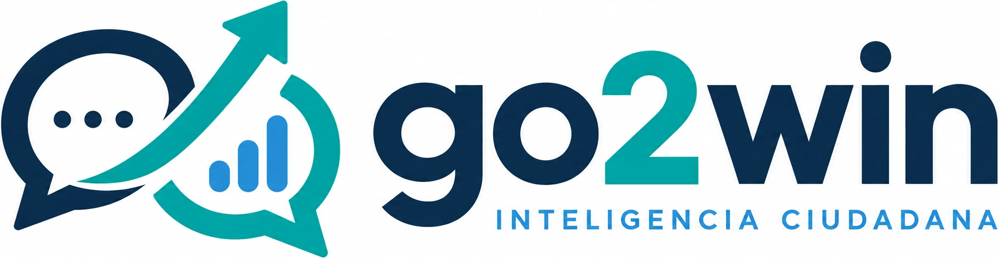

01
Expediente de candidatura
Integra perfil, elección, dictamen, fuentes y variables de viabilidad.
Configurar
Diagrama interactivoUna campaña gana cuando conecta evidencia, territorio, objetivos y seguimiento. Haz clic en cada etapa para ver qué información la alimenta y qué decisión produce.
No son pantallas aisladas: el expediente y los visores alimentan el análisis; la operación devuelve evidencia al tablero para corregir decisiones.
Integra perfil, elección, dictamen, fuentes y variables de viabilidad.
ConfigurarExplora territorio electoral, indicadores y diagnóstico regional.
ExplorarRelaciona mercado electoral, diagnóstico, oportunidades e INEGI + INE.
EntenderDefine una hipótesis y distribuye la meta a todo el territorio.
ProyectarOrdena dónde actuar primero según el enfoque que elija el equipo.
EnfocarDefine rumbo, tácticas, responsables, actividades y fechas.
DecidirEjecuta el plan en territorio y documenta cobertura, avances y hallazgos.
EjecutarConcentra evidencia, alertas, seguimiento de campo y ajuste del plan.
AprenderConcentra la información que da contexto a la candidatura y establece el punto de partida para todo el ciclo.
Perfil, elección, dictamen, variables de viabilidad, fuentes documentales y territorios asociados.
¿Con qué información validada inicia el equipo y cuáles son sus vacíos?
Un expediente ordenado que habilita la lectura territorial y estratégica.
Go2Win integra información pública, electoral, territorial e interna de operación; no sustituye el criterio político ni infiere preferencias individuales.
La estrategia de gubernatura se mide en votos totales, pero se ejecuta con prioridades distintas en cada unidad territorial.
La plataforma permite convertir el diagnóstico territorial en una estrategia documentada, una meta medible y un plan con seguimiento.